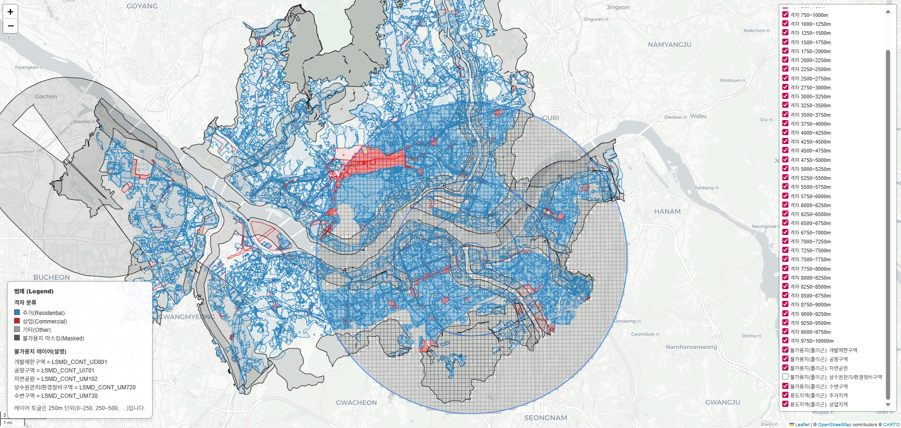
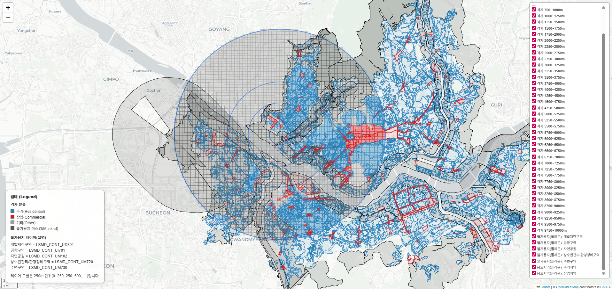
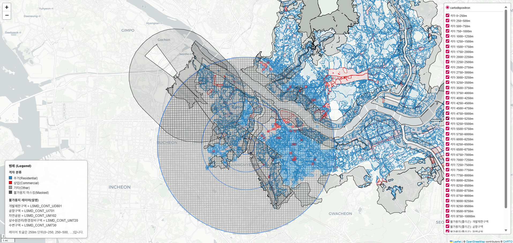
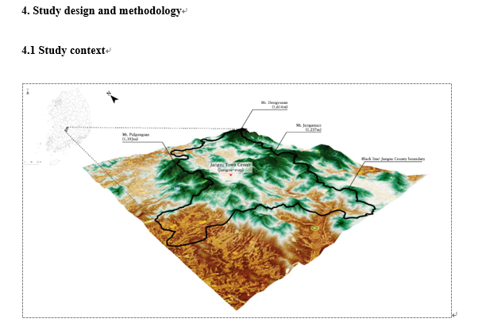
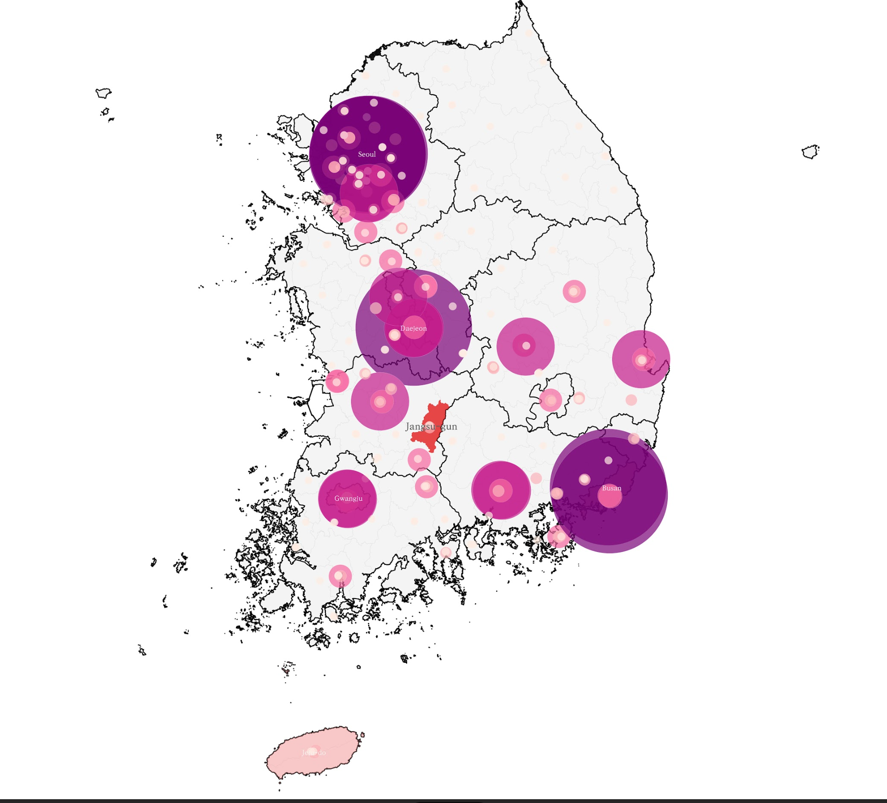
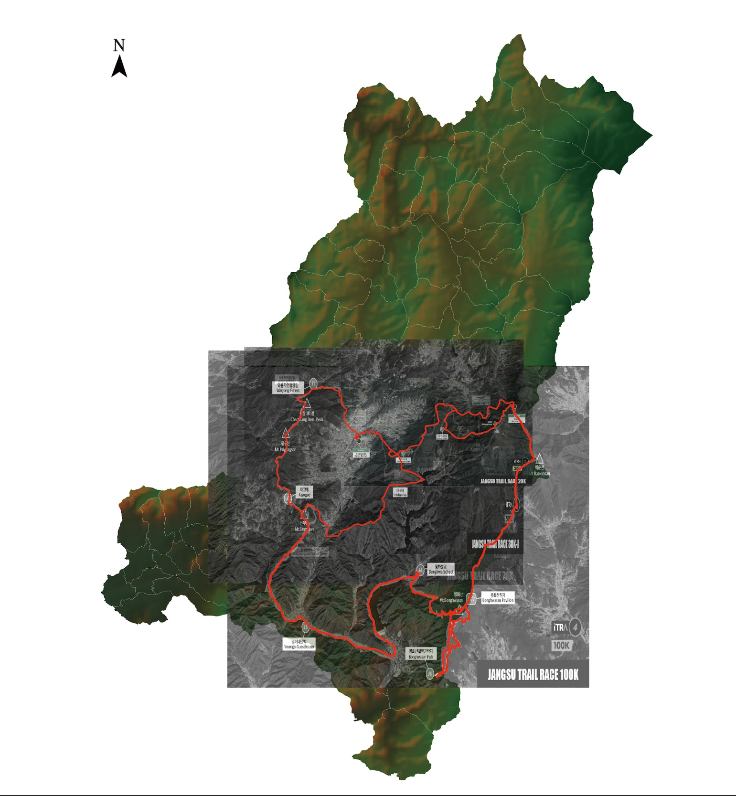

What makes cities better?
Education

About
I study how cities are selected within urban networks and why similar spatial conditions produce different urban outcomes. Rather than treating cities as isolated units, I approach them as relational systems shaped by flows of people, infrastructure, events, and institutional decisions.
My work focuses on the mechanisms through which accessibility, connectivity, and policy frameworks are unevenly translated into growth, decline, or stagnation. Methodologically, I combine spatial analysis, mobility data, and empirical case studies to explain how urban advantages are selectively realized across cities.



PhD Research
Research Abstract
This research examines why cities with comparable accessibility and connectivity do not experience similar development outcomes within mega-regional systems. While conventional urban theory assumes that stronger connections generate shared externalities, empirical evidence shows uneven translation into growth and functional upgrading.
The project focuses on selection mechanisms and transition failure, analyzing how certain cities convert network advantages into tangible outcomes while others do not. By integrating network analysis, commuting data, and spatial modeling, the study aims to explain how urban systems redistribute opportunities unevenly.
Publications
Publication Details
This thesis examines how a sports event can function not merely as a temporary attraction, but as a locally embedded mechanism for relational population formation, resource activation, and community coexistence. Using the Jangsu Trail Race as a case, the study analyzes how event participants encounter local resources, how peripheral regions become temporarily connected to broader mobility networks, and how an event portfolio model can support long-term local sustainability.


